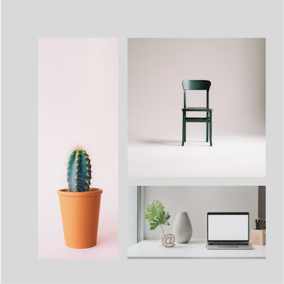
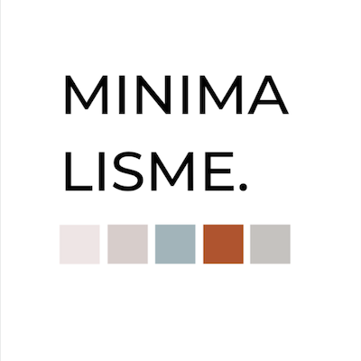
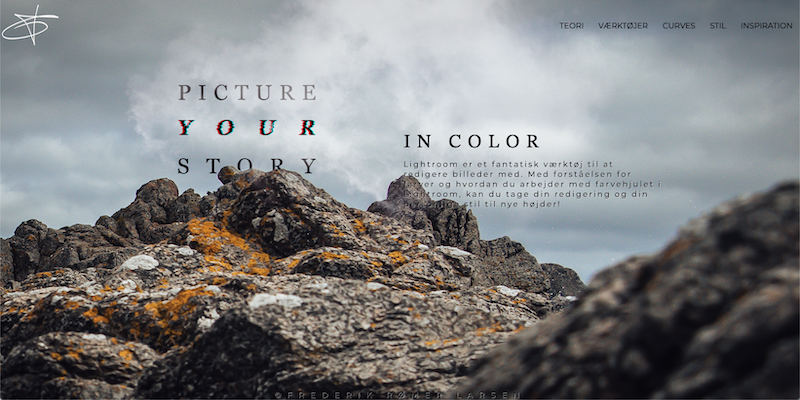
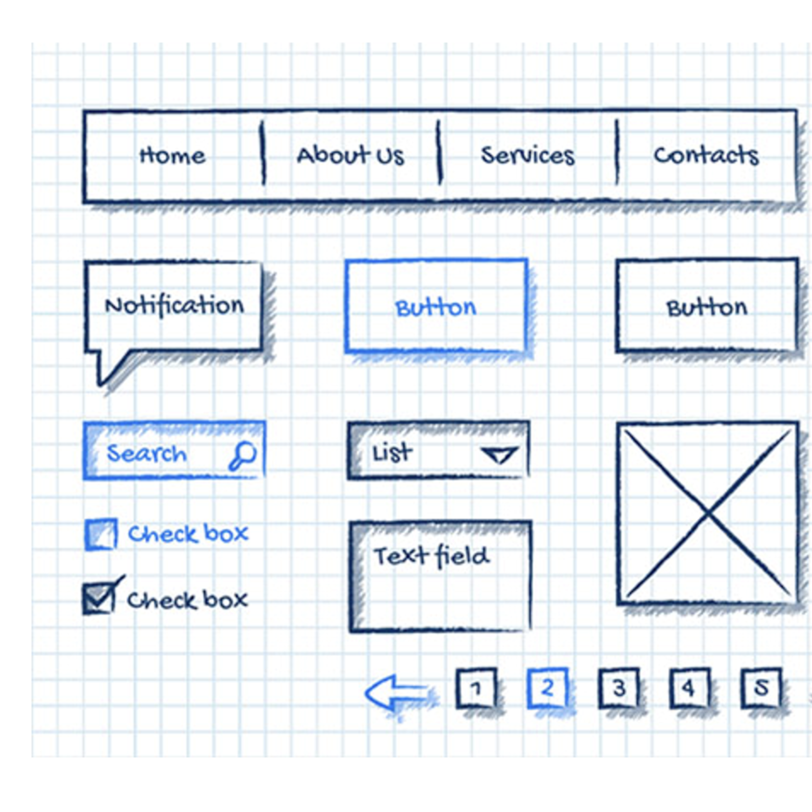
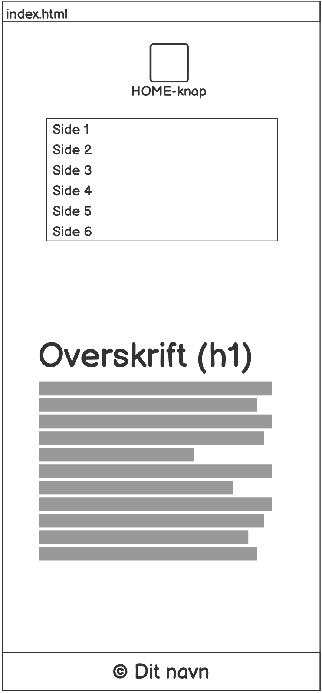
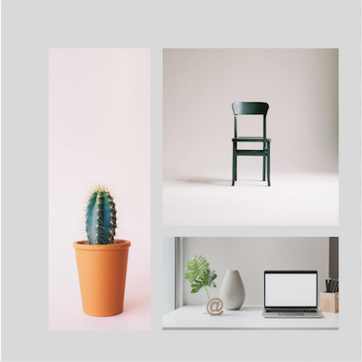
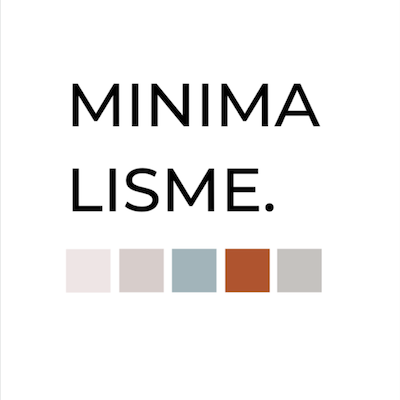
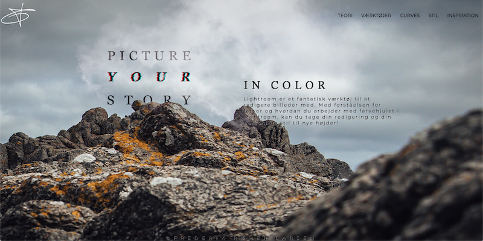
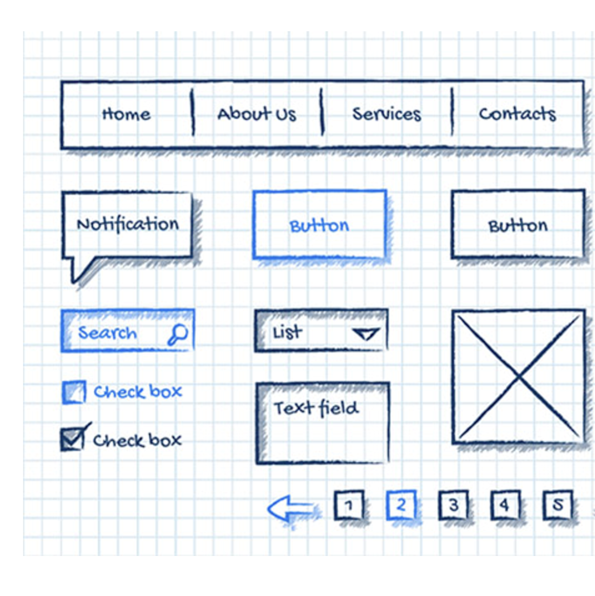
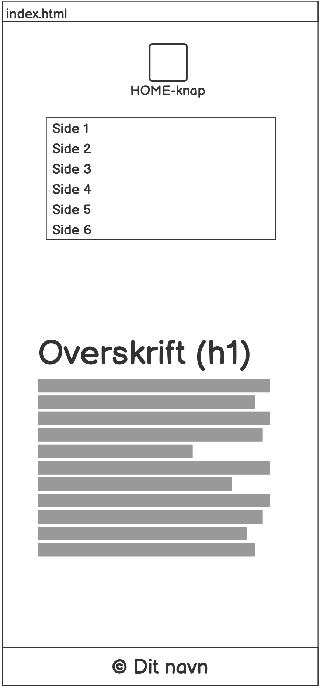

02 - Web
På dette tema var vores mål at lave et responsivt website ud fra en tildelt stilart. Min rolle var at indgå i gruppearbejde, og pitche vores tildelte stilart for vores medstuderende. Jeg arbejdede selvstændigt på udviklingen af sitet, som jeg udviklede som mobile first ved brug af mit wireframe og layoutdiagram i HTML og CSS.
 









Det lærte mig
Vigtigheden af at bruge HTML og CSS i samspil til at lave en responsiv side. Brugen af CSS til styling og mediaqueries for at gøre siden responsiv. Jeg lærte også at forstå brugen af moodboards og styletiles for at sikre websitets stilart.